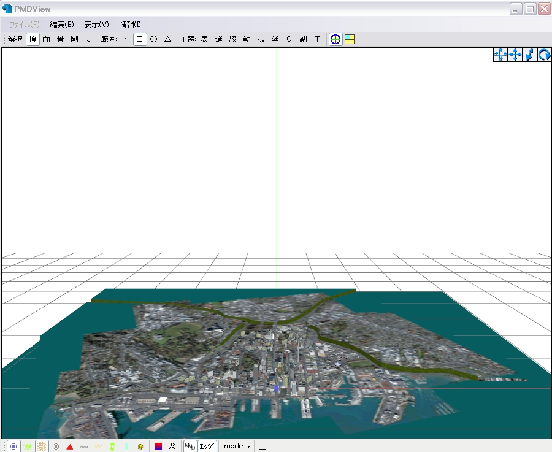
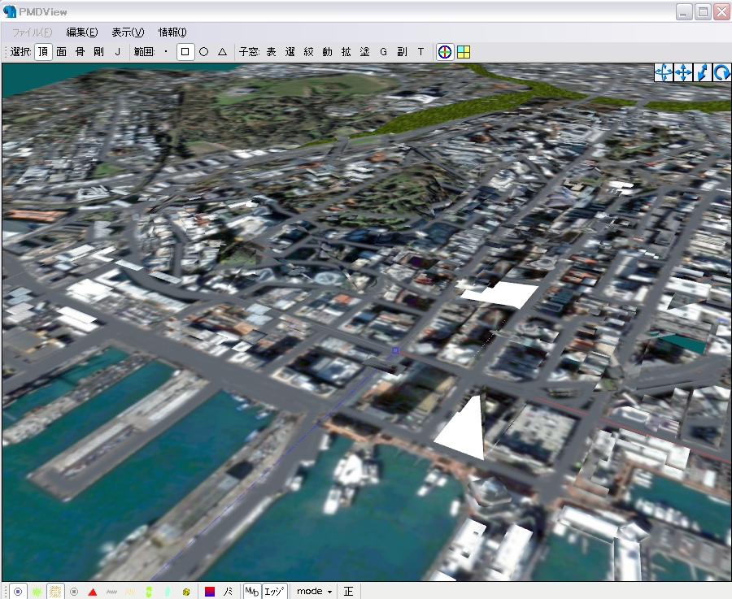
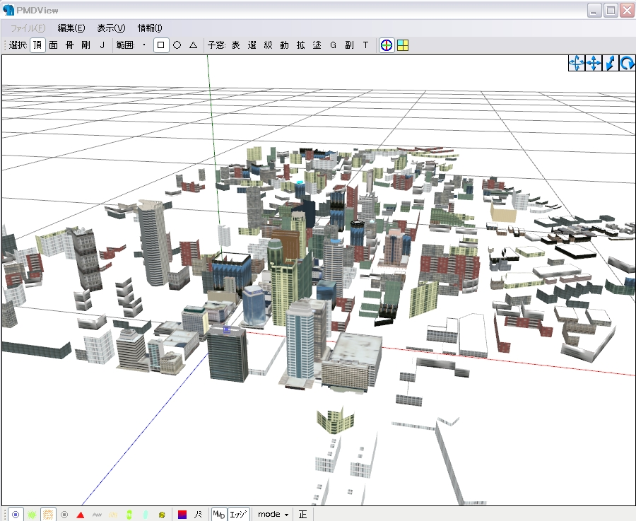
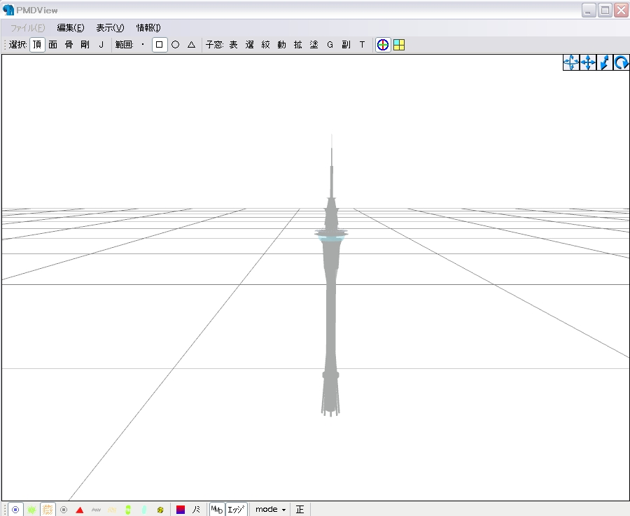
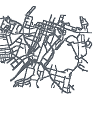

MMDオークランド00050までの変更・改造事項
【MMD】 外国の都市データとか、どっすか？ 【データ配布】
xファイル（アクセサリ） 5点
テクスチャ類 198点
MQOファイル 1点
（readme用素材 数点）
「フル＿軽量版MMDオークランド00051＿８万頂点.x」PMD頂点数□76，557 （メタセコ頂点数△33，642）
・PMDモデル10体以上動作可能PC向け 下記1〜4が全て入っています。

また、下記 1から4の順に読み込んで、環境をご確認ください。また、1のみでPCがカクカクする場合は
「auckland_city2.jpg」をもっと縮小してもう一度、渡来してみて下さい
「1軽量版MMDオークランド00051地面のみ.x」PMD頂点数 6，331 地面と崖とビルの屋上一部

「2軽量版MMDオークランド00051ビル群のみ.x」PMD頂点数 40,465 ビルの屋根が一部ありません



auckland_city2.JPG 50% ※道路を書き足し
Block24_Topview 30%
West_Block78_West01.jpg 30%
101_Ripcurl_front.JPG
West_Block78_North01.jpg
West_Block78.jpg 30%
その他のテクスチャも同梱。
＝モデル大きさ変更＝
・本家データを改造しやすくするためモデルデータは1/20に縮小しています。（２０倍で同じ大きさになる）
・地面と建物を分離しているファイルは、モアレ除去（MME texFilter.fx Furia氏 sm12354462）に対応予定のため。（ビルの屋上分離は途中。）
＝主要使用ツール＝感謝！
MikuMikuDance 7.11
PMDエディタ 0.0.9.1ｄ
Metasequoia Ver2.4.12
ﾌﾟﾗｸﾞｲﾝ
メタセコ用MikuMikuDance形式(PMDファイル)インポータ「pmdimpMQ_090713」
Photoshop Elements 5.0
＝当てにならない作業メモ＝
・PMDE上の頂点数と、メタセコイオア上の頂点数は異なる。テクスチャのせいらしい
・メタセコイア表示設定調整
・PMDE→PMD保存（書き出し）→テクスチャ名文字数オーバーのテクスチャは表示されません。MMD仕様
・pmdの頂点数の上限は65,535のため、モデルが変形します。65,535頂点を越えるモデルは、PMX形式で一時保存を推奨。
・本家オークランドｘファイルデータ→PMDE0.0.9.1ｄ読み込み→タワーと重いビルを削除し65,535未満でPMD書き出し→メタセコイアﾌﾟﾗｸﾞｲﾝpmdimpMQを用い仮MQO化→再度タワーと重いビルなどをメタセコにて合成→欠落しているテクスチャ名をひたすらコピペ→メタセコ上にてちまちまニヤニヤ作業。
・メタセコイア＞材質、指定テクスチャ名において拡張端子が欠落されていると、PMDEにXファイルインポートできない。例） 誤： Building01_Back01.JP → 正： Building01_Back01.JPG
・地面と建物を分離しているのは、MME（texFilter.fx Furia氏 sm12354462）に対応予定のため、ビルの屋上分離は途中。
・PMD自体のファイル名を長くしすぎると不具合が発生するみたい。
・ｘファイルよりPMDモデルのほうが10倍以上重くなる（さ）調べ
・ビル郡じゃなくてビル群ｗ
＝追記など＝
バージョンアップ訂正などを書くかもしれないブﾞログはこちら。
＝謝辞＝
グビグビ生ちゅうさん、これからもがんばってください。
ｂｙ 重機P（サカーン）